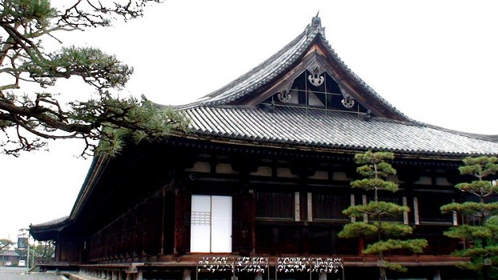
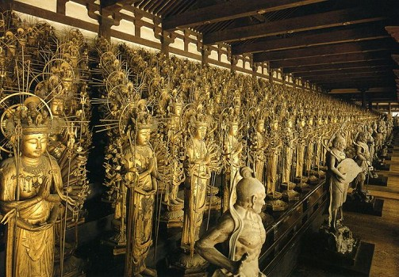
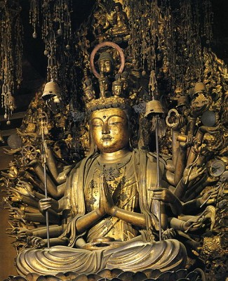

京都三十三间堂的观音像
冯冯
中国北京人士有一句俗语：“芦沟桥上的石狮子，数也数不清”。芦沟桥是北京城外南郊的一座石桥，建于元朝，桥的两边装了很多石狮子，多得连北京本地人也数不清到底有几只？意大利的马可孛罗来到此地，叹为观止，把此桥写进他的 “东游记”，而不知它的原名。（一九三七年七月七日，日军在此开战，攻击南岸的宛平中国军营，吉星文团长率军还击，展开了抗日战事）。
日本人也有类似的俗语，他们说： “京都的三十三间堂内观音像，多到数也数不清”，真的，您去问问日本人，恐怕没有几个日本人能告诉您，三十三间堂到底有多少尊观音雕像。

京都的三十三间堂，比芦沟桥老些，芦沟桥大约建于公元一千三百年代，京都三十三间堂建造于日本长承元年，即是公元一一三二年（中国南宋高宗建兴五年），这是罕有的日本古迹之一，比很多中国佛寺还老些。
三十三间堂，先后有三座，最早的一座，是日本鸟羽天皇下令兴建，运用幕府武阀平忠盛的财力，于公元一一三二年建成“长寿院”，供奉观音菩萨，以求消灾及长寿。
在公元一千年左右，当时最有势力的将军是平氏，当时尚无幕府之名，只称将军而挟持天皇以令诸侯，天皇徒具虚名，将军才是实际统治者，天皇成为将军的傀儡。将军又称“太政大臣”，相当于摄政王．权倾朝野，财雄势大。天皇对之言听计从，奉命唯谨，无所事事，除了安享荣华，唯有拜佛与搞文学音乐。
平忠盛将军死后，儿子平清盛继位，挟持后白河天皇，执政施令，白河天皇祟佛，甚于乃父，自称为护法天皇，后来改称白河法皇。平清盛假借天皇之命令，在法住寺原址，建造莲华王院三十三间堂，此为第二座三十三间堂，规模很宏大，落成的年代是长宽二年（中国宋孝宗隆兴二年，公元一一六四年），但于公元一二四九年，（中国明英宗正统三年），被 大火焚毁，后来再以两年时间重建，就是现在的三十三间堂，算来是第三次了。
 现存的三十三间堂，有一千零一尊 观音雕像，都是立像．其中的一百二十尊观音像的足部有著名佛像雕刻大师运庆的署名。他是公元一千一百年代最优秀的佛像雕刻名家，曾经雕造奈良的圆成寺大日如来像。三十三间堂的最初一百二十尊观音像，是他所雕成的，其余的观音像是他的儿子湛庆与弟子所雕成，历时十七年之久才完成。
 三十三间堂的一千零一尊观音雕像，是观音三十三个化身之中的十一面千手观音像，即是头有十一个，手有四十二只，各持法器。换言之，一共有头一万零十个，手臂四万二千零四十二只，全身贴以金箔，这是镰仓文化时代初期的珍贵艺术品，日本政府指定为“文化财”。
平氏执政长久，后来被新起的源氏将军所击败，最后一场大战，平氏军队六十余万人，全数被源氏歼灭于下关的海陆，平氏灭亡，保母抱着八岁的皇太子投海自尽，源氏取代平氏执政，下关海面常有战死幽灵出现，幽光数十万点，蔚为恐怖奇观，请参关拙作“澶之浦”一文，（二十年前旧作，收于〔夜半钟声〕一书内）。日本著名电影“四谷怪谈”有这一段惨 酷恐怖故事，演得极佳，气氛之悲惨恐怖，远胜任何中外同类电影，我也曾去过实地，亲见海面幽光与太子陵墓树林的磷火。源氏执政后，留给后世最著名就是一部厚厚的“源氏物语”（史书及故事传奇均有），其中提及“澶之浦”故事一个瞎子歌者被鬼武士捉去小天皇陵墓前献唱及奏琵琶。此一故事由日本名作家小泉八云 （原籍希腊，旅日娶日妻小泉氏，改为日姓小泉，颇有文名）用英文在美国大西洋月刊刊出而轰传世界，很多人因而访游下关澶之浦，我也是先看到小泉八云之集而凭吊澶之浦的。事隔二三十年，仍难忘怀那六十万大军在大海中挣扎惨死之状与那些幽光。现在该处已建成了世界最长的跨海大桥，连结了门司与下关一带的海峡， 从电视上看，仍可见到海流汹涌，十分恐怖。
平氏源氏争霸，杀戮不只六十万人，当在百万以上，一将功成万骨枯！可怜无定河边骨，犹是深闺梦里人！什么文学作品写得尽战争的悲惨残酷？平氏将军平忠盛疏财建佛寺，也未能长寿，未能挽救子孙的灭亡，可能是因为他虽信佛，都只是形式，并无守戒修行，他当初为夺霸权天下，也杀戮过上百万军民，杀孽太重，自造了恶业，种了恶因。
源赖朝尽诛平氏，也毁了平氏家寺，还好并未毁坏三十三间堂， 后世游客香客得以参拜瞻仰一千零一尊观音雕像，都不知那是日本历史上权力斗争转捩的遗迹。征战杀戮无数的平氏将军数代，对于日本文化的贡献，恐怕也就只有这一座三十三间堂吧？将相公侯，如今安在？
源氏第一代将军是源义朝，在与平氏战争中，被平氏将军平清盛（忠盛之子）所杀，平清盛俘虏了源氏将军义朝的十四岁三子源赖朝，要将之斩首。平清盛将军的太夫人池之尼太院君怜悯源赖朝年幼，为之乞命。平清盛是个孝子，听从母命，赦免了源赖朝及其弟源义经，押往伊豆海岛囚禁终生，令当地城主北条时政予以监管，而纳娶了义经的生母为妾。后来 源氏兄弟分别长大成人，哥哥源赖朝娶北条时政之女，率领北条氏军队，进攻平清盛，弟弟源义经也召集源氏武力，与儿合力攻打平氏，终于灭亡了平氏，杀了平清盛。平氏六十万大军在澶之浦被歼灭，平清盛的太夫人池之尼太院君抱住八岁的安德天皇投海而死，这位老尼曾经救过源赖朝的命，竟得不到源赖朝的赦免一死，真是可怜！平氏建寺不遗余力，亦不得善终，可能是功不补过吧。
图片出处
原载《佛网》网站
2000 年 ── 2002 年